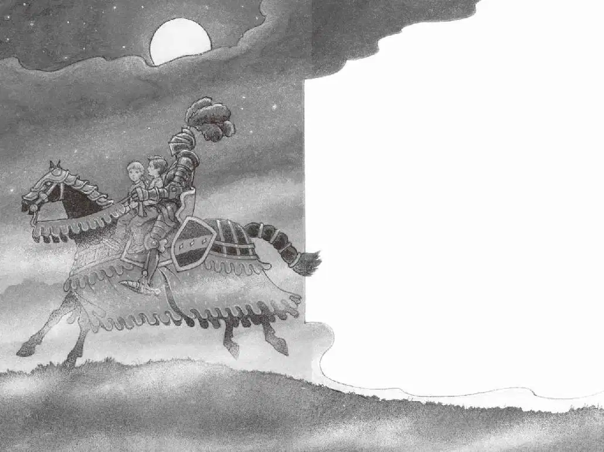

杰克一下子愣住了。
“是他。”安妮轻声说。
骑士伸出一只戴手套的手。
“快来，杰克。”安妮说。
“你要去哪儿？”杰克问。
“他是想帮助我们。”安妮说。
“你怎么知道？”杰克问。
“我看得出来。”安妮说。
安妮一步步朝马走去。骑士跳下了马。他抱起安妮，把她放在马背上。
“快来，杰克。”安妮喊道。
杰克慢慢地朝骑士走去。这一切就像一场梦。
骑士把杰克也抱了起来，放在安妮的身后。
然后，他一跃跳上马，坐在他们俩后面，用力拽了一下缰绳。
黑马沿着被月光映照的护城河嗒嗒地走了起来。
杰克坐在马鞍上前后摇晃，风吹拂着他的头发，他觉得自己非常勇敢，内心充满了力量。
他感觉自己仿佛可以跟这名神秘的骑士一起骑着这匹马永远地走下去，走过大海，走过世界，走到月亮上去。
黑暗中有一只老鹰在尖叫。
“树屋在那儿。”安妮指着远处的一片树林说。
骑士调整了一下方向，让黑马朝着树林奔去。
“看，就是那里。”安妮指着绳梯说。
骑士让马停住了脚步。他翻身下马，把安妮抱了下来。
“谢谢你，爵士。”安妮说完，鞠了个躬。
骑士接着把杰克也抱了下来。
“谢谢你。”杰克也朝骑士鞠了个躬。
骑士重新回到马上。
他举起一只戴手套的手，拉起缰绳，在迷雾中渐行渐远。
安妮开始顺着高高的绳梯往上爬，杰克跟在后面。他们爬进黑乎乎的树屋，从窗户往外望去。
只见骑士正策马奔向城堡的外墙，最后消失在外墙大门里。

云团又渐渐地把月亮遮了起来。在一刹那间，杰克仿佛看见骑士的盔甲正在城堡后的山丘上闪闪发光。
等云团把月亮完全遮住时，一团黑雾笼罩了大地。
“他走了。”安妮耳语般地说。
杰克穿着一身湿衣服，盯着外面的茫茫黑暗，瑟瑟发抖。
“好冷啊。”安妮说，“你知道那本宾夕法尼亚的书在哪儿吗？”
杰克听见安妮在黑暗中摸索着什么，但他自己仍然凝视着窗外。
“我想就是这本，”安妮说，“我摸到了一枚丝绸书签。”
杰克根本没有仔细听安妮说话，他一心想着能再次看到骑士闪亮的盔甲。
“好吧，就用这本吧，应该不会错。”安妮说，“杰克，我要指着图片了！我要说出愿望了！请带我们回家吧！”
杰克听见风开始呼啸，起初声音很轻。
“但愿我没有拿错书，也没有指错图片。”安妮说。
“什么？”杰克扭头问，“没有拿错书？没有指错图片？”
树屋开始摇晃。风声越来越响，像刺耳的尖叫。
“但愿这不是那本恐龙书！”安妮叫道。
“快停下！”杰克朝树屋喊道。
来不及了。
树屋开始旋转，越转越快。
然后，一切都静止了。
完完全全地静止不动了。